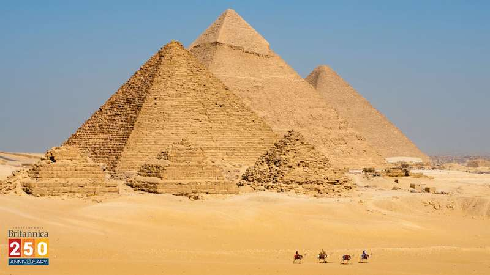

Tourist places in egypt
pyramids of giza
استغرق بناء الهرم الأكبر ما يقرب من عشرين عامًا وبناء الممرات والأجزاء السفليه من الهرم عشرة أعوام وذلك طبقا لما ذكره هيرودوت المؤرخ اليوناني الذي زار مصر في القرن الرابع قبل الميلاد بعد أكثر من 2000 سنه من بناء الهرم وسمع هذه الروايات وغيرها من بعض الكهنة والرواة . قطعت الحجارة التي استخدمت في بناء الهرم الأكبر من المنطقة المحيطة بالهرم وحجارة الكساء الخارجي من منطقه جبل طره والحجارة الجرانيتيه المستخدمة في الغرف الداخلية من محاجر أسوان وكانوا يأتوا بها عن طريق نهر النيل الذي كان يصل إلى منطقة الهرم في ذلك الوقت. كانت الحجارة تقطع وتفصل عن بعضها عن طريق عمل فتحات على مسافات متقاربة في قطعة الحجارة المراد قطعها ثم يتم دق بعض الأوتاد الخشبية فيها والطرق عليها مع وضع الماء عليها، وكلما تشرب الخشب بالماء ازداد حجمه داخل قطعه الحجر ومع استمرار الطرق عليها تنفصل عن بعضها ثم يتم تهذيبها وصقلها باستخدام نوع حجر أقوى مثل الجرانيت أو الديوريت. استخدم المصريون القدماء طريق رملي لبناء الأهرامات حيث توضع قطع الحجارة على زحافات خشبية أسفلها جذوع النخل المستديرة تعمل كالعجلات ويتم سحب الزحافات بالحبال والثيران مع رش الماء على الرمال لتسهل عمليه السحب، وكلما زاد الارتفاع زادوا في الرمال حتى قمة الهرم ثم يتم كساء الهرم بالحجر الجيري الأملس من أعلى إلى أسفل وإزاله الرمال تدريجيًا .
الموقع : هضبة الأهرام، الجيزة، مصر
cairo tower
رج القاهرة (ويُطلق عليه أحيانًا: «برج الجزيرة») هو برج يقع في العاصمة المصرية القاهرة، تم بناؤه بين عامي 1956 و1961 من الخرسانة المسلحة على تصميم زهرة اللوتس المصرية، من تصميم المهندس نعوم شبيب، ويقع في قلب القاهرة على جزيرة الزمالك بنهر النيل. يصل ارتفاعه إلى 187 متراً وهو أعلى من الهرم الأكبر بالجيزة بحوالي 43 مترا. يوجد على قمة برج القاهرة مطعم سياحي على منصة دوارة تدور برواد المطعم ليروا معالم القاهرة من كل الجوانب. ويعد من أبرز معالم القاهرة والذي يقع في منطقة الجزيرة برج القاهرة الذي ويتكون من 16 طابقاً ويقف على قاعدة من أحجار الجرانيت الأسواني التي سبق أن استخدمها المصريون القدماء في بناء معابدهم ومقابرهم، وتستغرق الرحلة داخل مصعد البرج للوصول إلى نهايته 45 ثانية لتشاهد عندما تقف على القمة بانوراما كاملة للقاهرة، الأهرامات، مبنى التلفزيون، أبي الهول، النيل، قلعة صلاح الدين، الأزهر وفي الطابق 14 مطعم.
.jpg)
الموقع : القاهرة ، مصر
new museum
يقع المتحف القومي للحضارة المصرية بالقرب من حصن بابليون ويطل على عين الصيرة في قلب مدينة الفسطاط التاريخية بمنطقة مصر القديمة بالقاهرة. تم وضع حجر الأساس في عام ٢٠٠٢م ليكون هذا المتحف واحداً من أهم وأكبر متاحف الآثار في العالم، وهو أول متحف يتم تخصيصه لمجمل الحضارة المصرية؛ حيث ستحكي أكثر من ٥٠ ألف قطعة أثرية مراحل تطور الحضارة منذ أقدم العصور حتى العصر الحديث. وسوف تعرض مقتنيات المتحف في معرض رئيسي دائم يتناول أهم إنجازات الحضارة المصرية، بالإضافة إلى ستة معارض أخرى تتناول موضوعات: الحضارة، والنيل، والكتابة، والدولة والمجتمع، والثقافة، والمعتقدات والأفكار، بالإضافة إلى معرض المومياوات الملكية. وسيتضمن المتحف أيضاً مساحات للمعارض المؤقتة، فضلاً عن معرض خاص بتطور مدينة القاهرة الحديثة. وسوف يضم المتحف أبنية خدمية، وتجارية، وترفيهية، ومركزاً بحثياً لعلوم المواد القديمة والترميم، كما سيكون المتحف مقراً لاستضافة مجموعة متنوعة من الفعاليات، كعروض الأفلام، والمؤتمرات، والمحاضرات، والأنشطة الثقافية. وبذلك سيكون هذا المتحف الذي يستهدف الجماهير المحلية والأجنبية مؤسسة متكاملة لها دورها المتميز في نشر الوعي الأثري والتعريف بدور مصر في إرساء دعائم الحضارة الإنسانية. .
.jpg)
الموقع : عين الصيرة - الفسطاط - مصر القديمة - القاهرة
Opera
دار الأوبرا المصرية، أو الهيئة العامة للمركز الثقافي القومي افتتحت في عام 1988 وتقع في مبناها الجديد والذي شُيد بمنحة من الحكومة اليابانية لنظيرتها المصرية بأرض الجزيرة بالقاهرة وقد بنيت الدار على الطراز الإسلامي. ويعتبر هذا الصرح الثقافي الكبير الذي افتتح يوم 10 أكتوبر عام 1988هو البديل عن دار الأوبرا الخديوية التي بناها الخديوي إسماعيل العام 1869 واحترقت في 28 أكتوبر العام 1971 بعد أن ظلت منارة ثقافية لمدة 102 عاما.
.jpg)
الموقع :برج الجزيرة - القاهرة - مصر
abusimbel
أبو سمبل هو موقع أثري يقع على الضفة الغربية لبحيرة ناصر نحو 290 كم جنوب غرب أسوان. وهو أحد مواقع "آثار النوبة" المدرجة ضمن قائمة اليونسكو لمواقع التراث العالمي. والتي تبدأ من اتجاه جريان النهر من أبو سمبل إلى فيلة (بالقرب من اسوان)..
.jpg)
الموقع :محافظة اسوان - مصر